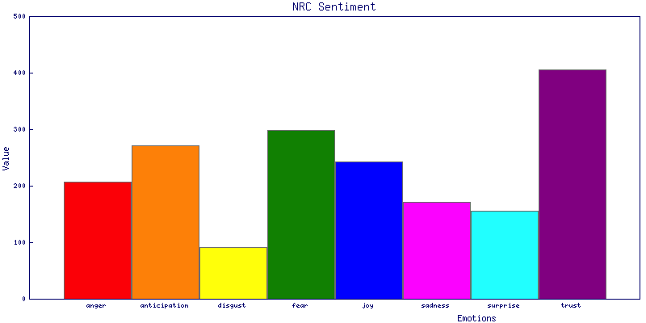

Book of Revelation Sentiment Analysis
I decided to write my own sentiment analysis library called Lingua::EN::Opinion and use it to investigate the KJV Bible Book of Revelation.
First up is the colored bar chart. It is made with this code. It shows the amount of the 8 specific emotions (tallied by the NRC Lexicon) by sentence. The curious thing about this chart is the dominating amount of “trust” in Revelation. This is the same with the entire KJV Bible – trust is the dominating emotion throughout. The second highest emotion is “fear”, which makes perfect sense for this dark book.

If the total positive and negative range of the full book is graphed (with [this code](https://github.com/ology/Lingua-EN-Opinion/blob/master/eg/plot this code)), where each sentence is a data point, the fluctuating line looks like this:
{kind=link}
The higher the line, the more positive the statement and vice-versa.
On the top and bottom of this graph are the the most positive and most negative sentences. They can be found with this code, and are:
66:021:011 Having the glory of God: and her light was like unto a stone
most precious, even like a jasper stone, clear as crystal;
66:021:008 But the fearful, and unbelieving, and the abominable, and
murderers, and whoremongers, and sorcerers, and idolaters, and
all liars, shall have their part in the lake which burneth
with fire and brimstone: which is the second death.
A curious thing – both sentences in the very same verse!
This graph can be viewed with less "noise" by binning the sentences into chunks and averaging the emotional content for each bin. This shows the average contour of the chart. Here is the same graph but in chunks of 10 sentences:
{kind=link}
There are 459 sentences in the Book of Revelation, so this divides the book into 459/10 ~ 46 discrete bins.
How about showing the occurrence of a term, like "love" in the text? That is done with [https://github.com/ology/Lingua-EN-Opinion/blob/master/eg/lines-term this code] and looks like:
{kind=link}
And here is the graph showing the term "beast":
{kind=link}
Okay. What about the amount of each of the 8 NRC emotions (anger, anticipation, disgust, fear, joy, sadness, surprise, and trust)? Let’s plot them (with [https://github.com/ology/Lingua-EN-Opinion/blob/master/eg/nrc-plot this code])!
Anger:
{kind=link}
Anticipation:
{kind=link}
Disgust:
{kind=link}
Fear:
{kind=link}
Joy:
{kind=link}
Sadness:
{kind=link}
Surprise:
{kind=link}
Trust:
{kind=link}
And as with the above “opinion” code, but using “[https://github.com/ology/Lingua-EN-Opinion/blob/master/eg/nrc-opinion nrc-opinion],” you can see what the most emotional sentence is, for each of these emotions. The most emotional sentences are these:
Sentence with the most anger:
66:020:010 And the devil that deceived them was cast into the lake of
fire and brimstone, where the beast and the false prophet are,
and shall be tormented day and night for ever and ever.
Sentence with the most anticipation:
66:019:007 Let us be glad and rejoice, and give honour to him: for the
marriage of the Lamb is come, and his wife hath made herself
ready.
Sentence with the most disgust:
66:019:018 That ye may eat the flesh of kings, and the flesh of captains,
and the flesh of mighty men, and the flesh of horses, and of
them that sit on them, and the flesh of all men, both free and
bond, both small and great.
Sentence with the most fear:
66:004:007 And the first beast was like a lion, and the second beast like
a calf, and the third beast had a face as a man, and the
fourth beast was like a flying eagle.
Sentence with the most joy:
66:022:002 In the midst of the street of it, and on either side of the
river, was there the tree of life, which bare twelve manner of
fruits, and yielded her fruit every month: and the leaves of
the tree were for the healing of the nations.
Sentence with the most negative:
66:016:021 And there fell upon men a great hail out of heaven, every
stone about the weight of a talent: and men blasphemed God
because of the plague of the hail; for the plague thereof was
exceeding great.
Sentence with the most positive:
66:004:006 And before the throne there was a sea of glass like unto
crystal: and in the midst of the throne, and round about the
throne, were four beasts full of eyes before and behind.
Sentence with the most sadness:
66:021:004 And God shall wipe away all tears from their eyes; and there
shall be no more death, neither sorrow, nor crying, neither
shall there be any more pain: for the former things are passed
away.
Sentence with the most surprise:
66:016:013 And I saw three unclean spirits like frogs come out of the
mouth of the dragon, and out of the mouth of the beast, and
out of the mouth of the false prophet.
Sentence with the most trust:
66:003:014 And unto the angel of the church of the Laodiceans write;
These things saith the Amen, the faithful and true witness,
the beginning of the creation of God;
UPDATE: Here is the Web GUI! Screenshot:
{kind=link}